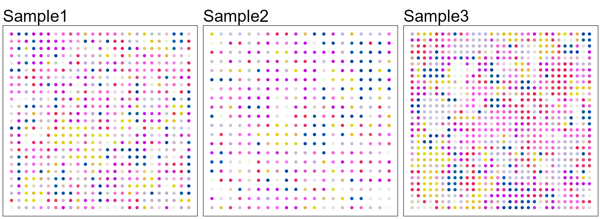
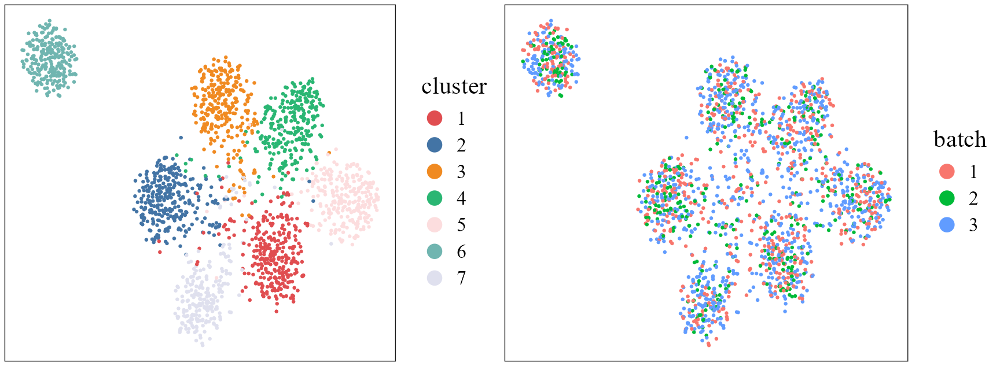

This vignette introduces the FAST workflow for the analysis of
multiple simulated spatial transcriptomics dataset. FAST workflow is
based on the PRECASTObj object created in the PRECAST R
package and the workflow of FAST is similar to that of PRECAST; see (https://feiyoung.github.io/PRECAST/articles/PRECAST.BreastCancer.html)
for the workflow of PRECAST. The workflow of FAST consists of three
steps
- Independent preprocessing and model setting
- Spatial dimension reduction using FAST
- Downstream analysis (i.e. , embedding alignment using Harmony and clustering using Louvain, visualization of clusters and embeddings, remove unwanted variation, combined differential expression analysis)
- Except for the above downstream analyses, cell-cell interaction analysis and trajectory inference can also be performed on the basis of the embeddings obtained by FAST.
We demonstrate the use of FAST to three simulated ST data that are here, which can be downloaded to the current working path by the following command:
githubURL <- "https://github.com/feiyoung/ProFAST/blob/main/vignettes_data/simu3.rds?raw=true"
download.file(githubURL,"simu3.rds",mode='wb')Then load to R
load("simu3.rds")The package can be loaded with the command:
library(ProFAST) # load the package of FAST method
#> Loading required package: gtools
#>
#>
library(PRECAST)
#> Loading required package: parallel
#> PRECAST : An efficient data integration method is provided for multiple spatial transcriptomics data with non-cluster-relevant effects such as the complex batch effects. It unifies spatial factor analysis simultaneously with spatial clustering and embedding alignment, requiring only partially shared cell/domain clusters across datasets. More details can be referred to Wei Liu, et al. (2023) <doi:10.1038/s41467-023-35947-w>. Check out our Package website (https://feiyoung.github.io/PRECAST/index.html) for a more complete description of the methods and analyses
library(Seurat)
#> Loading required package: SeuratObject
#> Loading required package: sp
#>
#> Attaching package: 'SeuratObject'
#> The following objects are masked from 'package:base':
#>
#> intersect, tView the simulated data
First, we view the the three simulated spatial transcriptomics data with ST platform. There are 200 genes for each data batch and ~2000 spots in total
simu3 ## a list including three Seurat object with default assay: RNA
#> [[1]]
#> An object of class Seurat
#> 200 features across 625 samples within 1 assay
#> Active assay: RNA (200 features, 0 variable features)
#> 2 layers present: counts, data
#>
#> [[2]]
#> An object of class Seurat
#> 200 features across 400 samples within 1 assay
#> Active assay: RNA (200 features, 0 variable features)
#> 2 layers present: counts, data
#>
#> [[3]]
#> An object of class Seurat
#> 200 features across 900 samples within 1 assay
#> Active assay: RNA (200 features, 0 variable features)
#> 2 layers present: counts, dataCheck the content in simu3.
head(simu3[[1]])
row.names(simu3[[1]])[1:10]Create a PRECASTObject object
We show how to create a PRECASTObject object step by step. First, we
create a Seurat list object using the count matrix and meta data of each
data batch. Although simu3 is a prepared Seurat list
object, we re-create a same objcet seuList to show the details.
- Note: the spatial coordinates must be contained in the meta data and
named as
rowandcol, which benefits the identification of spaital coordinates by FAST
## Get the gene-by-spot read count matrices
countList <- lapply(simu3, function(x) x[["RNA"]]@counts)
## Check the spatial coordinates: Yes, they are named as "row" and "col"!
head(simu3[[1]]@meta.data)
#> orig.ident nCount_RNA nFeature_RNA row col Group
#> spot1 SeuratProject 130934 114 1 1 Layer4
#> spot2 SeuratProject 3103 116 2 1 Layer6
#> spot3 SeuratProject 8112 110 3 1 Layer6
#> spot4 SeuratProject 2637 105 4 1 Layer6
#> spot5 SeuratProject 5664 109 5 1 Layer5
#> spot6 SeuratProject 4636 107 6 1 Layer6
## Get the meta data of each spot for each data batch
metadataList <- lapply(simu3, function(x) x@meta.data)
## ensure the row.names of metadata in metaList are the same as that of colnames count matrix in countList
M <- length(countList)
for(r in 1:M){
row.names(metadataList[[r]]) <- colnames(countList[[r]])
}
## Create the Seurat list object
seuList <- list()
for(r in 1:M){
seuList[[r]] <- CreateSeuratObject(counts = countList[[r]], meta.data=metadataList[[r]], project = "FASTsimu")
}Prepare the PRECASTObject with preprocessing step.
Next, we use CreatePRECASTObject() to create a
PRECASTObject object based on the Seurat list object
seuList. Users are able to see https://feiyoung.github.io/PRECAST/articles/PRECAST.BreastCancer.html
for what is done in this function. Since this is a simulated dataset, we
used all the 200 genes by using a custom gene list
customGenelist=custom_genelist). We observe that there are
only 197 genes passing the filtering step.
## Create PRECASTObject
custom_genelist <- row.names(seuList[[1]])
set.seed(2023)
PRECASTObj <- CreatePRECASTObject(seuList, customGenelist=custom_genelist)
#> Filter spots and features from Raw count data...
#>
#>
#> 2025-02-07 21:52:28.542161 : ***** Filtering step for raw count data finished!, 0.002 mins elapsed.
#> Select the variable genes for each data batch...
#> CreatePRECASTObject: remove genes:gene90 gene144 gene170 with low count reads in seuList.
#> 2025-02-07 21:52:28.546147 : ***** Gene selection finished!, 0 mins elapsed.
#> Filter spots and features from SVGs(HVGs) count data...
#> Normalizing layer: counts
#> Normalizing layer: counts
#> Normalizing layer: counts
#> 2025-02-07 21:52:30.353291 : ***** Filtering step for count data with variable genes finished!, 0.029 mins elapsed.
## User can retain the raw seuList by the following commond.
## PRECASTObj <- CreatePRECASTObject(seuList, customGenelist=row.names(seuList[[1]]), rawData.preserve = TRUE)
## check the number of genes/features after filtering step
PRECASTObj@seulist
#> [[1]]
#> An object of class Seurat
#> 197 features across 625 samples within 1 assay
#> Active assay: RNA (197 features, 0 variable features)
#> 2 layers present: counts, data
#>
#> [[2]]
#> An object of class Seurat
#> 197 features across 400 samples within 1 assay
#> Active assay: RNA (197 features, 0 variable features)
#> 2 layers present: counts, data
#>
#> [[3]]
#> An object of class Seurat
#> 197 features across 900 samples within 1 assay
#> Active assay: RNA (197 features, 0 variable features)
#> 2 layers present: counts, dataFit FAST using simulated data
Add the model setting
Add adjacency matrix list and parameter setting of FAST. More model
setting parameters can be found in model_set_FAST().
## seuList is null since the default value `rawData.preserve` is FALSE.
PRECASTObj@seuList
#> NULL
## Add adjacency matrix list for a PRECASTObj object to prepare for FAST model fitting.
PRECASTObj <- AddAdjList(PRECASTObj, platform = "ST")
#> Neighbors were identified for 625 out of 625 spots.
#> Neighbors were identified for 400 out of 400 spots.
#> Neighbors were identified for 900 out of 900 spots.
## Add a model setting in advance for a PRECASTObj object: verbose =TRUE helps outputing the information in the algorithm;
PRECASTObj <- AddParSettingFAST(PRECASTObj, verbose=TRUE)
## Check the parameters
PRECASTObj@parameterList
#> $maxIter
#> [1] 30
#>
#> $seed
#> [1] 1
#>
#> $epsLogLik
#> [1] 1e-05
#>
#> $verbose
#> [1] TRUE
#>
#> $error_heter
#> [1] TRUE
#>
#> $Psi_diag
#> [1] FALSEFit FAST
For function FAST, users can specify the number of
factors q and the fitted model fit.model. The
q sets the number of spatial factors to be extracted, and a
lareger one means more information to be extracted but higher
computaional cost. The fit.model specifies the version of
FAST to be fitted. The Gaussian version (gaussian) models
the log-count matrices while the Poisson verion (poisson)
models the count matrices; default as poisson.
### set q= 20 here
set.seed(2023)
PRECASTObj <- FAST(PRECASTObj, q=20)
#> ******Run the Poisson version of FAST...
#> Finish variable initialization
#> Satrt ICM step!
#> iter = 2, ELBO= 189470755.273560, dELBO=1.088229
#> Satrt ICM step!
#> iter = 3, ELBO= 208006705.975706, dELBO=0.097830
#> Satrt ICM step!
#> iter = 4, ELBO= 208036349.004114, dELBO=0.000143
#> Satrt ICM step!
#> iter = 5, ELBO= 208052955.566629, dELBO=0.000080
#> Satrt ICM step!
#> iter = 6, ELBO= 208063415.354311, dELBO=0.000050
#> Satrt ICM step!
#> iter = 7, ELBO= 208070526.557116, dELBO=0.000034
#> Satrt ICM step!
#> iter = 8, ELBO= 208075639.148463, dELBO=0.000025
#> Satrt ICM step!
#> iter = 9, ELBO= 208079480.312729, dELBO=0.000018
#> Satrt ICM step!
#> iter = 10, ELBO= 208082472.471151, dELBO=0.000014
#> Satrt ICM step!
#> iter = 11, ELBO= 208084871.329220, dELBO=0.000012
#> Satrt ICM step!
#> iter = 12, ELBO= 208086839.431824, dELBO=0.000009
#> 2025-02-07 21:52:32.365539 : ***** Finish FAST, 0.028 mins elapsed.
### Check the results
str(PRECASTObj@resList)
#> List of 1
#> $ FAST:List of 7
#> ..$ hV :List of 3
#> .. ..$ : num [1:625, 1:20] 2.29 3.9 6.7 1.87 1.63 ...
#> .. .. ..- attr(*, "scaled:center")= num [1:20] 1.1 -0.74 2.32 -0.297 0.925 ...
#> .. ..$ : num [1:400, 1:20] 9.44 3.39 2.07 5.21 7.11 ...
#> .. .. ..- attr(*, "scaled:center")= num [1:20] 0.011 0.621 0.675 0.806 3.815 ...
#> .. ..$ : num [1:900, 1:20] -1.134 2.008 0.575 5.096 2.564 ...
#> .. .. ..- attr(*, "scaled:center")= num [1:20] 3.61 -0.86 -1.32 -1.09 -2.94 ...
#> ..$ nu : num [1:3, 1:197] 1.027 4.189 -1.123 -0.314 -0.436 ...
#> ..$ Psi : num [1:20, 1:20, 1:3] 29.897 -3.545 -0.52 -2.123 0.458 ...
#> ..$ W : num [1:197, 1:20] -0.1561 0.0744 0.0839 0.0073 0.0336 ...
#> ..$ Lam : num [1:3, 1:197] 1.81 2.38 1.16 1.63 1.11 ...
#> ..$ ELBO : num 2.08e+08
#> ..$ ELBO_seq: num [1:11] -2.15e+09 1.89e+08 2.08e+08 2.08e+08 2.08e+08 ...Evaluate the adjusted McFadden’s pseudo R-square
Next, we investigate the performance of dimension reduction by
calculating the adjusted McFadden’s pseudo R-square for each data batch.
The simulated true labels is in the meta.data of each
component of PRECASTObj@seulist.
## Obtain the true labels
yList <- lapply(PRECASTObj@seulist, function(x) x$Group)
### Evaluate the MacR2
MacVec <- sapply(1:length(PRECASTObj@seulist), function(r) get_r2_mcfadden(PRECASTObj@resList$FAST$hV[[r]], yList[[r]]))
#> # weights: 154 (126 variable)
#> initial value 1216.193843
#> iter 10 value 111.302733
#> iter 20 value 84.903136
#> iter 30 value 73.537007
#> iter 40 value 70.085431
#> iter 50 value 67.564984
#> iter 60 value 64.541681
#> iter 70 value 58.571720
#> iter 80 value 54.685023
#> iter 90 value 52.256853
#> iter 100 value 49.030507
#> final value 49.030507
#> stopped after 100 iterations
#> # weights: 154 (126 variable)
#> initial value 778.364060
#> iter 10 value 109.555576
#> iter 20 value 21.847012
#> iter 30 value 4.165319
#> iter 40 value 0.876597
#> iter 50 value 0.401735
#> iter 60 value 0.249915
#> iter 70 value 0.176244
#> iter 80 value 0.130403
#> iter 90 value 0.092360
#> iter 100 value 0.067700
#> final value 0.067700
#> stopped after 100 iterations
#> # weights: 154 (126 variable)
#> initial value 1751.319134
#> iter 10 value 136.488744
#> iter 20 value 115.404960
#> iter 30 value 106.919246
#> iter 40 value 105.864477
#> iter 50 value 104.688230
#> iter 60 value 102.005826
#> iter 70 value 99.477323
#> iter 80 value 98.324310
#> iter 90 value 98.248840
#> iter 100 value 98.226919
#> final value 98.226919
#> stopped after 100 iterations
### output them
print(MacVec)
#> adjusted McFadden's R2 adjusted McFadden's R2 adjusted McFadden's R2
#> 0.9586289 0.9986095 0.9430191Embedding alignment and clustering using Harmony and Louvain
Based on the embeddings from FAST, we use Harmony to
align the embeddings then followed by Louvain clustering to obtain the
cluster labels. In this downstream analysis, other methods for embedding
alignment and clustering can be also used. In the vignette of two
sections of DLPFC Visium data, we will show another method
(iSC-MEB) to jointly perform embedding alignment and
spatial clustering.
PRECASTObj <- RunHarmonyLouvain(PRECASTObj, resolution = 0.4)
#> ******Use Harmony to remove batch in the embeddings from FAST...
#> Warning in HarmonyMatrix(matlist2mat(PRECASTObj@resList$FAST$hV), meta_data =
#> data.frame(sample = sampleID), : HarmonyMatrix is deprecated and will be
#> removed in the future from the API in the future
#> Warning: Warning: The parameters do_pca and npcs are deprecated. They will be ignored for this function call and please remove parameters do_pca and npcs and pass to harmony cell_embeddings directly.
#> This warning is displayed once per session.
#> Transposing data matrix
#> Initializing state using k-means centroids initialization
#> Harmony 1/10
#> Harmony 2/10
#> Harmony 3/10
#> Harmony converged after 3 iterations
#> 2025-02-07 21:52:33.164611 : ***** Finish Harmony correction, 0.006 mins elapsed.
#> ******Use Louvain to cluster and determine the number of clusters...
#> Warning: Data is of class matrix. Coercing to dgCMatrix.
#> Warning: No assay specified, setting assay as RNA by default.
#> Warning: Keys should be one or more alphanumeric characters followed by an
#> underscore, setting key from PC to PC_
#> Computing nearest neighbor graph
#> Computing SNN
#> Modularity Optimizer version 1.3.0 by Ludo Waltman and Nees Jan van Eck
#>
#> Number of nodes: 1925
#> Number of edges: 89015
#>
#> Running Louvain algorithm...
#> Maximum modularity in 10 random starts: 0.8781
#> Number of communities: 7
#> Elapsed time: 0 seconds
#> 2025-02-07 21:52:33.820952 : ***** Finsh Louvain clustering and find the optimal number of clusters, 0.011 mins elapsed.
ARI_vec <- sapply(1:M, function(r) mclust::adjustedRandIndex(PRECASTObj@resList$Louvain$cluster[[r]], yList[[r]]))
print(ARI_vec)
#> [1] 0.8004654 0.8308046 0.7792729Remove unwanted variations in the log-normalized expression matrices
In the following, we remove the unwanted variations in the log-normalized expression matrices to obtain a combined log-normalized expression matrix in a Seurat object. In the context of the simulated data used in this study, housekeeping genes are not present, thus, we turn to another method to remove the unwanted variations. Specifically, we leverage the batch effect embeddings estimated through Harmony to capture and mitigate unwanted variations. Additionally, we utilize the cluster labels obtained via Louvain clustering to retain the desired biological effects.
The estimated embeddings of batch effects (batchEmbed) are in the
slot PRECASTObj@resList$Harmony and cluster labels
(cluster) are in the slot PRECASTObj@resList$Louvain.
str(PRECASTObj@resList$Harmony)
#> List of 2
#> $ harmonyembed:List of 3
#> ..$ : num [1:625, 1:20] 2.21 4.1 6.88 2.01 2.28 ...
#> ..$ : num [1:400, 1:20] 8.88 3.13 2.09 4.79 6.05 ...
#> ..$ : num [1:900, 1:20] -1.434 2.682 0.977 5.69 3.147 ...
#> $ batchEmbed :List of 3
#> ..$ : num [1:625, 1:20] 0.2981 -0.1293 -0.0498 -0.0803 -0.456 ...
#> .. ..- attr(*, "dimnames")=List of 2
#> .. .. ..$ : chr [1:625] "1" "2" "3" "4" ...
#> .. .. ..$ : NULL
#> ..$ : num [1:400, 1:20] 0.6 0.33 0.138 0.466 1.19 ...
#> .. ..- attr(*, "dimnames")=List of 2
#> .. .. ..$ : chr [1:400] "626" "627" "628" "629" ...
#> .. .. ..$ : NULL
#> ..$ : num [1:900, 1:20] 0.267 -0.475 -0.171 -0.211 -0.333 ...
#> .. ..- attr(*, "dimnames")=List of 2
#> .. .. ..$ : chr [1:900] "1026" "1027" "1028" "1029" ...
#> .. .. ..$ : NULL
str(PRECASTObj@resList$Louvain)
#> List of 1
#> $ cluster:List of 3
#> ..$ : Factor w/ 7 levels "0","1","2","3",..: 4 3 3 3 1 3 1 2 3 5 ...
#> .. ..- attr(*, "names")= chr [1:625] "spot1" "spot2" "spot3" "spot4" ...
#> ..$ : Factor w/ 7 levels "0","1","2","3",..: 3 5 7 3 1 1 1 1 2 2 ...
#> .. ..- attr(*, "names")= chr [1:400] "spot626" "spot627" "spot628" "spot629" ...
#> ..$ : Factor w/ 7 levels "0","1","2","3",..: 4 4 4 4 7 5 5 5 4 5 ...
#> .. ..- attr(*, "names")= chr [1:900] "spot1026" "spot1027" "spot1028" "spot1029" ...Then, we integrate the three sections by removing the unwanted
variations and setting seulist_HK=NULL and
Method = "HarmonyLouvain" in the function
IntegrateSRTData(). After obtaining seuInt, we
will see there are three embeddings: FAST,
harmony and position, in the slot
seuInt@reductions. FAST are the embeddings
obtained by FAST model fitting and are uncorrected embeddings that may
includes the unwanted effects (i.e., batch effects);
harmonyare the embeddings obtained by Harmony fitting and
are aligned embeddings; and position are the spatial
coordinates.
seulist_HK <- NULL
seuInt <- IntegrateSRTData(PRECASTObj, seulist_HK=seulist_HK, Method = "HarmonyLouvain", seuList_raw=NULL, covariates_use=NULL, verbose=TRUE)
#> ******Perform PCA on housekeeping gene expression matrix...
#> Only use the results in Harmony and Louvain to remove unwanted variations...
#> 2025-02-07 21:52:33.950208 : ***** Finish PCA, 0 mins elapsed.
#> ******Remove the unwanted variations in gene expressions using spatial linear regression...
#> Finish variable initialization
#> iter = 2, ELBO= -502011.519262, dELBO=0.999766
#> iter = 3, ELBO= -440535.045321, dELBO=0.122460
#> iter = 4, ELBO= -415206.215699, dELBO=0.057496
#> iter = 5, ELBO= -396882.312058, dELBO=0.044132
#> iter = 6, ELBO= -385298.102370, dELBO=0.029188
#> iter = 7, ELBO= -377426.770479, dELBO=0.020429
#> iter = 8, ELBO= -372383.070570, dELBO=0.013363
#> iter = 9, ELBO= -368984.027468, dELBO=0.009128
#> iter = 10, ELBO= -366660.717606, dELBO=0.006297
#> iter = 11, ELBO= -364958.509766, dELBO=0.004642
#> iter = 12, ELBO= -363657.295430, dELBO=0.003565
#> iter = 13, ELBO= -362613.437627, dELBO=0.002870
#> iter = 14, ELBO= -361754.501054, dELBO=0.002369
#> iter = 15, ELBO= -361031.682288, dELBO=0.001998
#> iter = 16, ELBO= -360415.856381, dELBO=0.001706
#> iter = 17, ELBO= -359885.474872, dELBO=0.001472
#> iter = 18, ELBO= -359425.581454, dELBO=0.001278
#> iter = 19, ELBO= -359024.396234, dELBO=0.001116
#> iter = 20, ELBO= -358672.936396, dELBO=0.000979
#> iter = 21, ELBO= -358363.858351, dELBO=0.000862
#> iter = 22, ELBO= -358091.250571, dELBO=0.000761
#> iter = 23, ELBO= -357850.167674, dELBO=0.000673
#> iter = 24, ELBO= -357636.499785, dELBO=0.000597
#> iter = 25, ELBO= -357446.754125, dELBO=0.000531
#> iter = 26, ELBO= -357277.968204, dELBO=0.000472
#> iter = 27, ELBO= -357127.594463, dELBO=0.000421
#> iter = 28, ELBO= -356993.441678, dELBO=0.000376
#> iter = 29, ELBO= -356873.608440, dELBO=0.000336
#> iter = 30, ELBO= -356766.443070, dELBO=0.000300
#> 2025-02-07 21:52:35.111484 : ***** Finish unwanted variation removal, 0.019 mins elapsed.
#> ******Sort the results into a Seurat object...
#> 2025-02-07 21:52:35.686779 : ***** Finish results arrangement, 0.01 mins elapsed.
seuInt
#> An object of class Seurat
#> 197 features across 1925 samples within 1 assay
#> Active assay: RNA (197 features, 0 variable features)
#> 2 layers present: counts, data
#> 3 dimensional reductions calculated: FAST, harmony, positionVisualization
First, user can choose a beautiful color schema using
chooseColors() in the R package PRECAST.
cols_cluster <- chooseColors(palettes_name = "Nature 10", n_colors = 7, plot_colors = TRUE)
Then, we plot the spatial scatter plot for clusters using the
function SpaPlot() in the R package
PRECAST.
p12 <- SpaPlot(seuInt, item = "cluster", batch = NULL, point_size = 1, cols = cols_cluster, combine = TRUE)
p12
Users can re-plot the above figures for specific need by returning a
ggplot list object. For example, we plot the spatial heatmap using a
common legend by using the function drawFigs() in the R
package PRECAST.
pList <- SpaPlot(seuInt, item = "cluster", title_name= 'Section',batch = NULL, point_size = 1, cols = cols_cluster, combine = FALSE)
drawFigs(pList, layout.dim = c(1, 3), common.legend = TRUE, legend.position = "right", align = "hv")We use the function AddUMAP() in the R package
PRECAST to obtain the three-dimensional components of UMAP
using the aligned embeddings in the reduction harmony.
seuInt <- AddUMAP(seuInt, n_comp=3, reduction = 'harmony', assay = 'RNA')
seuInt
#> An object of class Seurat
#> 197 features across 1925 samples within 1 assay
#> Active assay: RNA (197 features, 0 variable features)
#> 2 layers present: counts, data
#> 4 dimensional reductions calculated: FAST, harmony, position, UMAP3We plot the spatial tNSE RGB plot to illustrate the performance in extracting features.
p13 <- SpaPlot(seuInt, batch = NULL, item = "RGB_UMAP", point_size = 1, combine = FALSE, text_size = 15)
drawFigs(p13, layout.dim = c(1, 3), common.legend = TRUE, legend.position = "right", align = "hv")
We use the function AddUTSNE() in the R package
PRECAST to obtain the two-dimensional components of UMAP
using the aligned embeddings in the reduction harmony, and
plot the tSNE plot based on the extracted features to check the
performance of integration.
seuInt <- AddTSNE(seuInt, n_comp = 2, reduction = 'harmony', assay = 'RNA')
p1 <- dimPlot(seuInt, item = "cluster", point_size = 0.5, font_family = "serif", cols = cols_cluster,
border_col = "gray10", legend_pos = "right") # Times New Roman
p2 <- dimPlot(seuInt, item = "batch", point_size = 0.5, font_family = "serif", legend_pos = "right")
drawFigs(list(p1, p2), layout.dim = c(1, 2), legend.position = "right")
Combined differential epxression analysis
Finally, we condut the combined differential expression analysis
using the integrated log-normalized expression matrix saved in the
seuInt object. The function FindAllMarkers()
in the Seurat R package is ued to achieve this
analysis.
dat_deg <- FindAllMarkers(seuInt)
#> Calculating cluster 1
#> Calculating cluster 2
#> Calculating cluster 3
#> Calculating cluster 4
#> Calculating cluster 5
#> Calculating cluster 6
#> Calculating cluster 7
library(dplyr)
#>
#> Attaching package: 'dplyr'
#> The following objects are masked from 'package:stats':
#>
#> filter, lag
#> The following objects are masked from 'package:base':
#>
#> intersect, setdiff, setequal, union
n <- 5
dat_deg %>%
group_by(cluster) %>%
top_n(n = n, wt = avg_log2FC) -> top10
seuInt <- ScaleData(seuInt)
#> Centering and scaling data matrixPlot dot plot of normalized expressions for each spatial domain identified by using the FAST embeddings.
col_here <- c("#F2E6AB", "#9C0141")
library(ggplot2)
p1 <- DotPlot(seuInt, features=unname(top10$gene), cols=col_here, # idents = ident_here,
col.min = -1, col.max = 1) + coord_flip()+ theme(axis.text.y = element_text(face = "italic"))+
ylab("Domain") + xlab(NULL) + theme(axis.text.x = element_text(size=12, angle = 25, hjust = 1, family='serif'),
axis.text.y = element_text(size=12, face= "italic", family='serif'))
p1Session Info
sessionInfo()
#> R version 4.4.1 (2024-06-14 ucrt)
#> Platform: x86_64-w64-mingw32/x64
#> Running under: Windows 11 x64 (build 26100)
#>
#> Matrix products: default
#>
#>
#> locale:
#> [1] LC_COLLATE=Chinese (Simplified)_China.utf8
#> [2] LC_CTYPE=Chinese (Simplified)_China.utf8
#> [3] LC_MONETARY=Chinese (Simplified)_China.utf8
#> [4] LC_NUMERIC=C
#> [5] LC_TIME=Chinese (Simplified)_China.utf8
#>
#> time zone: Asia/Tbilisi
#> tzcode source: internal
#>
#> attached base packages:
#> [1] parallel stats graphics grDevices utils datasets methods
#> [8] base
#>
#> other attached packages:
#> [1] ggplot2_3.5.1 dplyr_1.1.4 Seurat_5.1.0 SeuratObject_5.0.2
#> [5] sp_2.1-4 PRECAST_1.6.5 ProFAST_1.4 gtools_3.9.5
#>
#> loaded via a namespace (and not attached):
#> [1] fs_1.6.4 matrixStats_1.4.1
#> [3] spatstat.sparse_3.1-0 insight_1.0.0
#> [5] httr_1.4.7 RColorBrewer_1.1-3
#> [7] tools_4.4.1 sctransform_0.4.1
#> [9] backports_1.5.0 utf8_1.2.4
#> [11] R6_2.5.1 lazyeval_0.2.2
#> [13] uwot_0.2.2 withr_3.0.1
#> [15] prettyunits_1.2.0 gridExtra_2.3
#> [17] progressr_0.14.0 performance_0.12.4
#> [19] cli_3.6.3 Biobase_2.64.0
#> [21] textshaping_0.4.0 spatstat.explore_3.3-2
#> [23] fastDummies_1.7.4 labeling_0.4.3
#> [25] sass_0.4.9 spatstat.data_3.1-2
#> [27] ggridges_0.5.6 pbapply_1.7-2
#> [29] pkgdown_2.1.1 systemfonts_1.1.0
#> [31] harmony_1.2.1 scater_1.32.1
#> [33] parallelly_1.38.0 rstudioapi_0.16.0
#> [35] RSQLite_2.3.7 FNN_1.1.4.1
#> [37] generics_0.1.3 ica_1.0-3
#> [39] spatstat.random_3.3-2 car_3.1-3
#> [41] Matrix_1.7-0 ggbeeswarm_0.7.2
#> [43] fansi_1.0.6 S4Vectors_0.42.1
#> [45] abind_1.4-8 lifecycle_1.0.4
#> [47] yaml_2.3.10 CompQuadForm_1.4.3
#> [49] carData_3.0-5 SummarizedExperiment_1.34.0
#> [51] SparseArray_1.4.8 BiocFileCache_2.12.0
#> [53] Rtsne_0.17 grid_4.4.1
#> [55] blob_1.2.4 promises_1.3.0
#> [57] crayon_1.5.3 GiRaF_1.0.1
#> [59] miniUI_0.1.1.1 lattice_0.22-6
#> [61] beachmat_2.20.0 cowplot_1.1.3
#> [63] KEGGREST_1.44.1 pillar_1.9.0
#> [65] knitr_1.48 GenomicRanges_1.56.2
#> [67] future.apply_1.11.2 codetools_0.2-20
#> [69] leiden_0.4.3.1 glue_1.7.0
#> [71] spatstat.univar_3.0-1 data.table_1.16.0
#> [73] vctrs_0.6.5 png_0.1-8
#> [75] spam_2.10-0 org.Mm.eg.db_3.20.0
#> [77] gtable_0.3.5 cachem_1.1.0
#> [79] xfun_0.47 S4Arrays_1.4.1
#> [81] mime_0.12 survival_3.6-4
#> [83] SingleCellExperiment_1.26.0 fitdistrplus_1.2-1
#> [85] ROCR_1.0-11 nlme_3.1-164
#> [87] bit64_4.5.2 progress_1.2.3
#> [89] filelock_1.0.3 RcppAnnoy_0.0.22
#> [91] GenomeInfoDb_1.40.1 bslib_0.8.0
#> [93] irlba_2.3.5.1 vipor_0.4.7
#> [95] KernSmooth_2.23-24 colorspace_2.1-1
#> [97] BiocGenerics_0.50.0 DBI_1.2.3
#> [99] nnet_7.3-19 tidyselect_1.2.1
#> [101] DR.SC_3.4 bit_4.5.0
#> [103] compiler_4.4.1 curl_5.2.3
#> [105] httr2_1.0.4 BiocNeighbors_1.22.0
#> [107] xml2_1.3.6 desc_1.4.3
#> [109] DelayedArray_0.30.1 plotly_4.10.4
#> [111] scales_1.3.0 lmtest_0.9-40
#> [113] rappdirs_0.3.3 stringr_1.5.1
#> [115] digest_0.6.37 goftest_1.2-3
#> [117] presto_1.0.0 spatstat.utils_3.1-0
#> [119] rmarkdown_2.28 RhpcBLASctl_0.23-42
#> [121] XVector_0.44.0 htmltools_0.5.8.1
#> [123] pkgconfig_2.0.3 sparseMatrixStats_1.16.0
#> [125] MatrixGenerics_1.16.0 highr_0.11
#> [127] dbplyr_2.5.0 fastmap_1.2.0
#> [129] rlang_1.1.4 htmlwidgets_1.6.4
#> [131] ggthemes_5.1.0 UCSC.utils_1.0.0
#> [133] shiny_1.9.1 DelayedMatrixStats_1.26.0
#> [135] farver_2.1.2 jquerylib_0.1.4
#> [137] zoo_1.8-12 jsonlite_1.8.9
#> [139] BiocParallel_1.38.0 mclust_6.1.1
#> [141] BiocSingular_1.20.0 magrittr_2.0.3
#> [143] Formula_1.2-5 scuttle_1.14.0
#> [145] GenomeInfoDbData_1.2.12 dotCall64_1.1-1
#> [147] patchwork_1.3.0 munsell_0.5.1
#> [149] Rcpp_1.0.13 viridis_0.6.5
#> [151] reticulate_1.39.0 furrr_0.3.1
#> [153] stringi_1.8.4 zlibbioc_1.50.0
#> [155] MASS_7.3-60.2 plyr_1.8.9
#> [157] org.Hs.eg.db_3.19.1 listenv_0.9.1
#> [159] ggrepel_0.9.6 deldir_2.0-4
#> [161] Biostrings_2.72.1 splines_4.4.1
#> [163] tensor_1.5 hms_1.1.3
#> [165] igraph_2.0.3 ggpubr_0.6.0
#> [167] spatstat.geom_3.3-3 ggsignif_0.6.4
#> [169] RcppHNSW_0.6.0 reshape2_1.4.4
#> [171] biomaRt_2.60.1 stats4_4.4.1
#> [173] ScaledMatrix_1.12.0 evaluate_1.0.0
#> [175] httpuv_1.6.15 RANN_2.6.2
#> [177] tidyr_1.3.1 purrr_1.0.2
#> [179] polyclip_1.10-7 future_1.34.0
#> [181] scattermore_1.2 rsvd_1.0.5
#> [183] broom_1.0.7 xtable_1.8-4
#> [185] RSpectra_0.16-2 rstatix_0.7.2
#> [187] later_1.3.2 viridisLite_0.4.2
#> [189] ragg_1.3.3 tibble_3.2.1
#> [191] memoise_2.0.1 beeswarm_0.4.0
#> [193] AnnotationDbi_1.68.0 IRanges_2.38.1
#> [195] cluster_2.1.6 globals_0.16.3